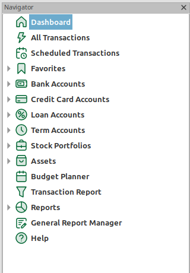
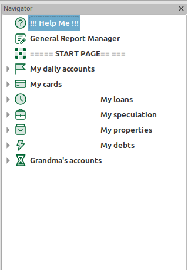
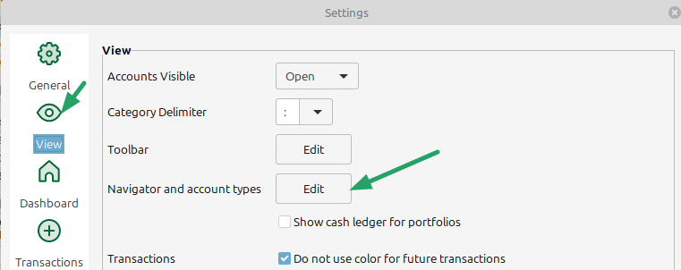
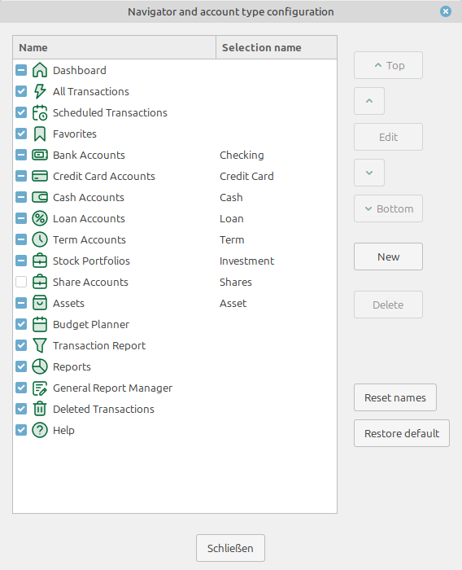
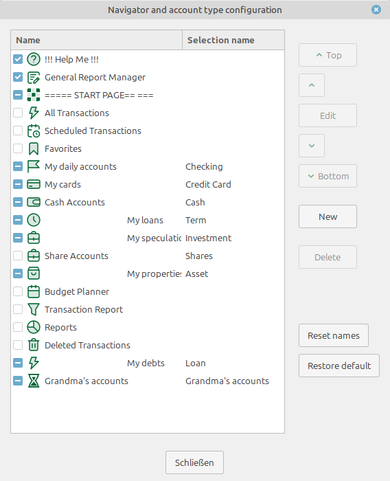
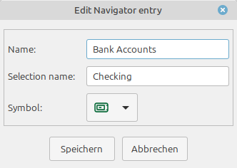
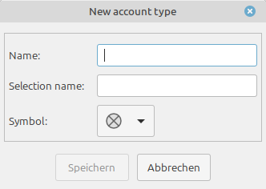
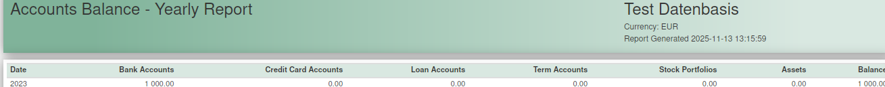
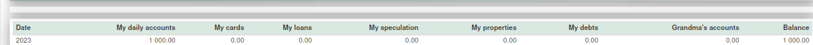

MMEX ermöglicht die Konfiguration des Navigators durch:


Der Konfigurationsdialog kann entweder im Einstellungsmenü geöffnet werden Extras → Einstellungen…:

oder mit einem Rechtsklick auf den Punkt „Dashboard“ oder einen leeren Bereich im Navigator.Das Dialogfenster ermöglicht es, Navigationseinträge neu anzuordnen und zu bearbeiten:


Um die Reihenfolge der Navigationselemente zu ändern, wählen Sie ein Element aus und verschieben Sie es mithilfe der Schaltflächen Oben/↑/↓/Unten an die gewünschte Position.
Die Reihenfolge der Kontoelemente im Navigator bestimmt auch die Reihenfolge der Optionen in den Kontenauswahldialogen sowie die Reihenfolge der Kontotypen auf der Startseite.
Mit der Schaltfläche Bearbeiten wird der Bearbeitungsdialog für das ausgewählte Element geöffnet.

Im Dialog können Name und Symbol geändert werden.
Für (Bank-)Konten, Wertpapierdepots und Vermögenswerte kann der Auswahlname, der in Dialogen wie „Neues Konto erstellen“ verwendet wird, angepasst werden.
Für Navigationselemente kann der Sichtbarkeitsstatus geändert werden.
Nicht kontobezogene Navigationseinträge können im Navigator ausgeblendet werden, indem sie deaktiviert werden. Z. B. eine nicht benötigte Hilfefunktion.
Kontotypen können nicht aktiviert oder deaktiviert werden. Sie werden im Navigator angezeigt, wenn entsprechende Konten im gewünschten Status (offen oder geschlossen) vorhanden sind.
Um einen neuen Kontotyp hinzuzufügen, wird die Schaltfläche Neu verwendet, die einen Bearbeitungsdialog für neue Elemente öffnet:

Für einen neuen Kontotyp muss ein Name angegeben werden. Optional kann ein „Auswahlname“ festgelegt werden, der in den Kontenauswahldialogen verwendet wird. Wird dieser nicht angegeben, wird der eingegebene Name verwendet.
Mit der Schaltfläche Namen zurücksetzen werden Name und Symbol der Standard-Navigationseinträge auf die Standardkonfiguration zurückgesetzt. Dies beeinflusst weder die Reihenfolge noch benutzerdefinierte Konten.
Dies kann wichtig sein, wenn die Sprache der Benutzeroberfläche geändert wird, da die Übersetzungen der Standard-Navigationseinträge nicht automatisch aktualisiert werden.
Mit der Schaltfläche Standard wiederherstellen wird die Standardkonfiguration des Navigators wiederhergestellt. Alle Anpassungen an Namen, Symbolen und Reihenfolge werden zurückgesetzt und benutzerdefinierte Kontotypen gelöscht.
Konten mit einem benutzerdefinierten Kontotyp werden wieder in Bankkonten (Girokonten) umgewandelt.
Die Navigator-Anpassung bestimmt auch die Reihenfolge der Konten an anderen Stellen in MMEX:



